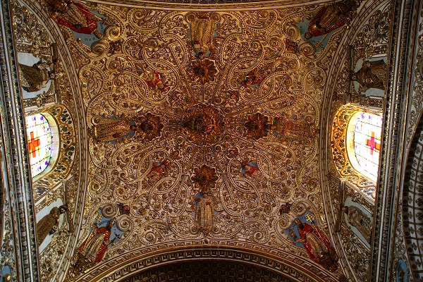

サントドミンゴ教会/オアハカ Templo de Santo Domingo/Oaxaca
さらにぶらぶら歩いていくと大きな教会があった。
サントドミンゴ教会Templo de Sant Domingo といい、オアハカを代表するだけでなく、ある意味
メキシコのチュリゲラ様式を代表する教会。
ここで改めてメキシコのチュリゲラ様式について触れてみよう。
17世紀、イタリアで花開いたバロック様式は中世のヨーロッパの建築様式において最も装飾過剰なムーブメントであった。
極論を言えば古今東西の歴史上、最も奇抜で過剰だったのがバロック様式だったともいえる。
そのバロック様式の中でも特に過剰だったのがスペインのチュリゲラ一族が中心となって盛り上がったチュリゲラ様式。
他のヨーロッパのバロック様式の教会すらもチョット引くほど
ド派手な内装が特徴の建築様式だった。
つまりヨーロッパ最強のド派手様式だったのだ。
このチュリゲラ様式、スペインが中南米に進出するにつれて彼の地で大きく花開いてしまったのだ。
つまりそれまでヨーロッパに留まっていたローカルな芸術スタイルが世界中に広まって行く、その先鋭がチュリゲラ様式だったのである。
大航海時代におけるスペインの中南米やアジアへの進出はヨーロッパで勝手に盛り上がっていたコテコテムーブメントを図らずも世界中に拡散してしまったのである。
これが良い事か悪い事かは後世の歴史的判断に委ねるしかないが、いずれにせよ中南米ではスペインの侵略によりその文化的基盤は大きく変化していくことになる。
それまでのマヤ・アステカ文明は徹底的に排除され、カトリック的な世界観を強いられることになったのである。
しかもメキシコの場合、カトリックと地元の土着信仰が混ざり合っていたりしてスペインのチュリゲラ様式の斜め上を行く教会なども出現したりしている（後に述べる）。
そんなメキシコのチュリゲラ様式を代表するサンドミンゴ教会である。
外観はやや大人しい印象だ。
ところが中に入ると…
おおお！
こってりしてますなー。
ヴォールト状の天井やドームが高さを変え連続していく。
その天井は絵や装飾で恐ろしいほどびっしり覆われている。

まるで天井が美術館になっているようなものだ。
金銀宝石が相当使われているという。
あまりにも凄いんで上ばかり見ていたら首が痛くなっちゃいました。
自分の中での
脳内楽園の地平線が塗り替えられてしまった気がするぞ。
意外とデカい聖人像とか取り付けてあるが、落ちてきたりしないのかな？
っていうかずーっと見上げていると落ちてきそうな気がしてゾワゾワしてくる。
祭壇に向かう最後の天井部分は特に気合が入っている。
正面の祭壇。
これもまたスペインぽい濃厚さ。
脇にあった礼拝堂もかなりの密度でした。
そんなコテコテの内部だったが特に印象に残ったのが入り口付近にあった天井のレリーフ。
生命の樹だ。
これ、葡萄の樹に様々な聖人が実っている、というレリーフなのだが、元来はエデンの園に会った樹で、知恵の樹と対を成すものだ。
アダムは知恵の樹の実を食べ知恵を得て、さらに生命の樹の実を食べて神と同じ存在になろうとした事から楽園を追放された、でお馴染みの生命の樹である。
しかしメキシコの生命の樹はそこに土着信仰のエッセンスを盛り込んであるのだ。
そういえばタイのお寺にも似たようなのがありましたねえ。
生命の樹はメキシコでも人気のモチーフで、民芸品として売られている。
こんなところにもカトリックと土着宗教が微妙に混ざり合っている様子が見られる。
コッテコテの装飾の一画には先住民族のレリーフもあった。
これは先住民族の殉教者だ。
このような先住民族への配慮（スペイン側から見たら、だが）もメキシコ統治には必要だったのだろう。
聞いた話だが、中南米を統治するにあたってスペインは地域ごとにその方法を変えていったという。
民族浄化に近い徹底的な統治をした地域もあれば現地の風習や文化を織り交ぜながら順化していく方法を採った所もあったという。
恐らくメキシコは後者だったのだろう。
カトリックの文化をメキシコの従来の宗教や習俗と微妙にかけ合わせて現地の人々に受容させていったのだ。
裏返せばそれだけメキシコのマヤ、アステカ文明が強固だったという事だ。
まあ、逆に言うと何でこの国は昔の文明の痕跡が残ってないの？っていう国は、まあ、推して知るべしというか…。
教会の一画にあったレリーフ。
16世紀に造られた教会とは思えないモチーフ。
恐らく近年付け足されたんでしょう。

教会の周辺は広場になっており、多くの観光客や市民が散策している。
煮込みホルモンのトルティーヤを出す店。美味そう。
このエリアはオアハカの中でもアンティークショップが集中しているエリアだ。
驚いたのだが、
教会に奉納されていたエクスヴォト（絵馬）もアンティークとして売られているのだ。
いいのかな？と思いつつ思わず数枚買ってしまった。
メキシコ珍寺武者修行
そのショップの中から外を見ると婚礼行列の人形が置き去りにされていて、ちょっと寂しそうでした…。
次の修行へGOGO！